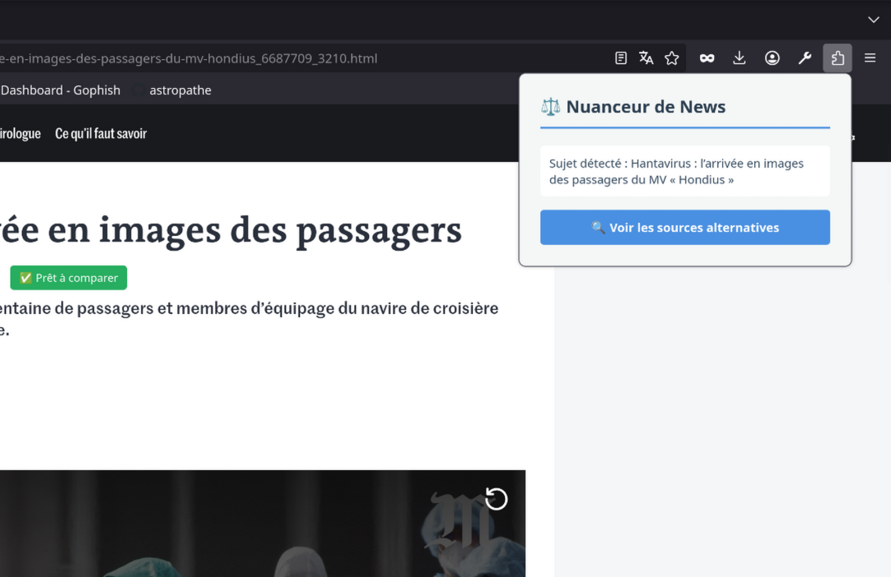

DebAIsing — Extension IA d'Analyse et de Neutralisation des Biais Médiatiques
L'objectif de DebAIsing était de concevoir une extension de navigateur (Firefox/Chrome) capable de briser les bulles de filtre et de détecter en temps réel les biais cognitifs, émotionnels ou partisans dans les titres de la presse écrite grand public.
Pour éviter l'exfiltration ou le vol des clés d'API (notamment lors des pushs publics sur GitHub), l'architecture utilise le stockage local chiffré du navigateur (chrome.storage.local). La clé de l'utilisateur n'est jamais écrite en dur dans le code source.
1. Mécanisme de capture universel
Le principal défi technique consistait à créer un script d'injection (Content Script) résistant aux surcouches CSS agressives et aux structures de DOM dynamiques des sites complexes comme Le Figaro ou Le Monde.

2. Requêtage asynchrone et isolation de l'API
Ce fragment issu de panel.js gère la communication asynchrone avec le modèle Gemini 1.5 Flash via un flux sécurisé, afin d'obtenir une réponse structurée en moins de 2 secondes :
const prompt = `Tu es un expert en analyse médiatique. Analyse le biais du titre : "${titre}".
Donne une réponse courte avec :
1. Le ton (ex: Alarmiste, Neutre, Partisan).
2. Les mots porteurs de biais s'il y en a.
3. Une proposition de titre purement factuel.`;
const response = await fetch(`https://generativelanguage.googleapis.com/v1beta/models/gemini-1.5-flash:generateContent?key=${key}`, {
method: 'POST',
headers: { 'Content-Type': 'application/json' },
body: JSON.stringify({ contents: [{ parts: [{ text: prompt }] }] })
});
const data = await response.json();
if (data.candidates && data.candidates[0]) {
displayIA.innerText = data.candidates[0].content.parts[0].text;
}3. Fonctionnalités Implémentées
L'extension est aujourd'hui capable de :
- Injecter de manière stable un bouton neutre via la méthode CSS avancée
all: initialpour contourner les protections de style des éditeurs. - Extraire proprement le texte des titres sans capturer les balises enfants ou les scripts publicitaires.
- Générer instantanément une version neutre et factuelle de l'information grâce à l'IA, tout en offrant un pivot rapide vers Google News pour comparer les sources alternatives.